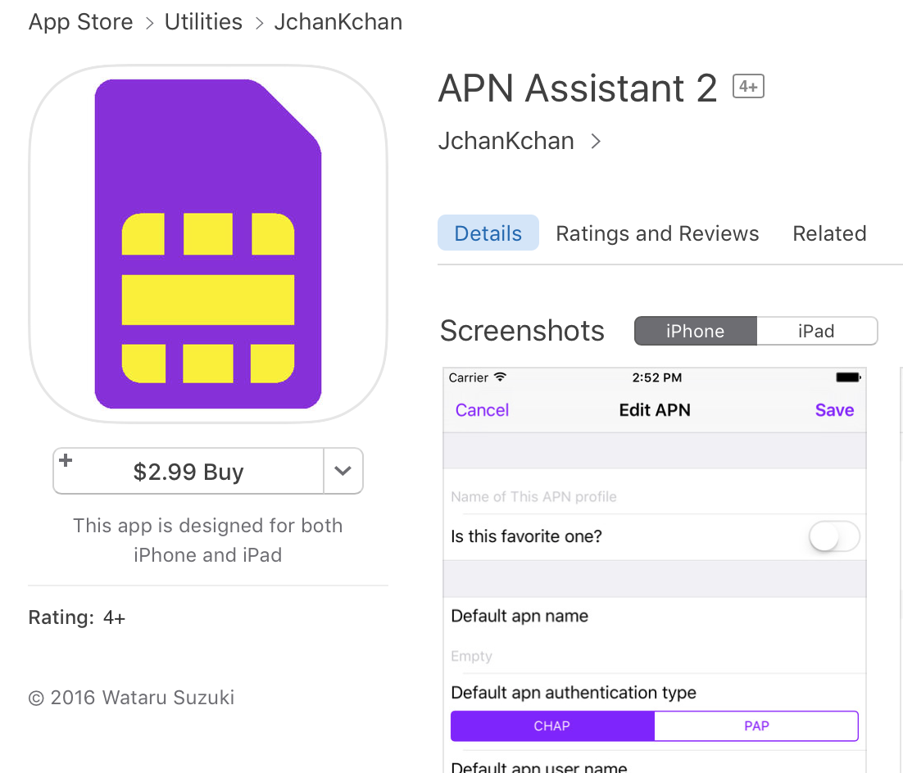

Welcome to APN Assistant.
This projects grown your & my app, APN Assistant.
Why start this?
Sometimes, Apple hide APN setting from iOS devices.
Why? In my opinion, Apple preferential treatment relationship to Major Mobile Operators, not Users!
Almost cases, iPhone & iPad is so smart. Like case of choose major mobile operator, users have no problems.
Case of choose minor mobile operator(like MVNO), users have to set APN manually, because Apple don't show APN setting for us.
This specification is bad, especially change SIM while traveling.
Because installation of config profile need Internet, almost case using free Wi-Fi network.
But, we can not all find free Wi-Fi while traveling.
I thought this is good opportunity for me to create good convenient app and sale on App Store.
But this app rejected from Apple.
So, I'll release source code to Open Source.
You can use this app if you have a Apple Developer Program License.
Sales on App Store
But, App Store Review is inconsistent. It means we still have chanse to provide apps on App Store.
So, you can install theres from App Store yet, Please check out and buy if this app become to your favorites.
Or, you can use this app on Web.
APN Bookmark PageAPN Profile Generator
Authors and Contributors
Only me!! yet.. In 2016, Wataru Suzuki (@watarusuzuki) founded GitHub.
Always welcome to your join!
Support or Contact
Having question? Or request new feature? Please join to slack team.